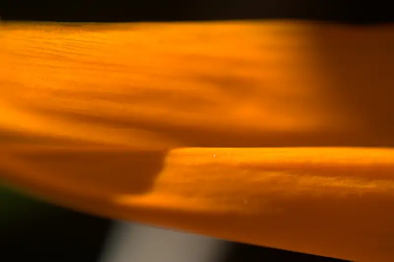

Fotos de Flores: Ave Del Paraíso
{kind=link}

{kind=link}
{kind=link}
Estas son otros de los ejemplares de aquella sesión de fotos impromptu en el patio de la casa de mi amá :).. bueno, estas son de la muy exótica "ave del paraíso"... exótica? .. bueeeno pues.. se ve como que exótica casi como que me imagino unos tucanes por ahí entre las flores esas :)... pero.. probablemente no tiene nada de exótico para el clima que hay en Ensenada. Hmm.. ok, me puse a investigar un poco (solo en wikipedia) y resulta que la strelizia reginae si es una planta de clima tropical... tropical !!?? Ensenada?? bueno.. con la humedad que se pasa de la alberca de los vecinos alomejor si alcanza a ser medio tropicalón el ambiente ahí en el patio.. pero... y el calor tropical?? y además... estas estaban en flor en Febrero!! bueno... no me quejo, solo se supone que no deberían florear... pero 'tan bonitas :). Ah y en cuanto a las fotos... hmm.. son de las primeras que saco usando las lentillas de dioptría que trajo Santa Claus en Diciembre :).. yep, ese día me di vuelo tomando fotos así :D.. y todavía faltan....